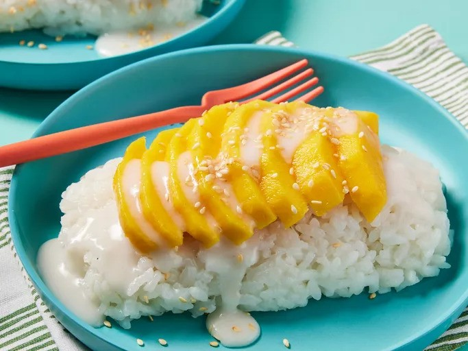

Thai Mango Sticky Rice

Description
This classic and delicious dessert is sure to be a favorite and a crowd pleaser!
Ingredients
- 2 cups water
- 1 ½ cups uncooked glutinous sticky white rice, rinsed
- 2 cups coconut milk, divided
- 1 cup white sugar, or to taste
- ¾ teaspoon salt, divided
- 1 tablespoon white sugar, or to taste
- 1 teaspoon tapioca starch
- 3 mangos, peeled and sliced
- 1 tablespoon toasted sesame seeds
Steps
-
Gather all ingredients.
-
Combine water and rice in a saucepan. Bring to a boil, cover, and reduce
heat to low. Simmer until water is absorbed, 15 to 20 minutes.
-
While the rice is cooking, combine 1 ½ cups coconut milk, 1 cup sugar, and
1/2 teaspoon salt in another saucepan. Bring to a boil over medium heat;
remove from the heat and set aside.
-
Stir cooked rice into coconut milk mixture. Cover and allow to cool for 1 hour.
-
Make a sauce by combining 1/2 cup coconut milk, 1 tablespoon sugar, 1/4 teaspoon
salt, and tapioca starch in another saucepan; bring to a boil. Cook and stir
just until thickened.
-
Place coconut rice on a serving dish and arrange mangos on top. Pour sauce over mangos and rice.
-
Sprinkle with sesame seeds. Serve and enjoy!
Source: allrecipes:
Thai Sweet Sticky Rice With Mango (Khao Neeo Mamuang)